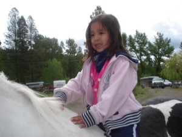

I had asked my Aunty Donna & Uncle Jerry to write something up for me from their point of view, I am very happy I asked.

Our dear Isabella Kaitlyn Aljam/Antoine firstborn great-grandchild of Sandy & Elizabeth Aljam. We (Papa Jerry/Gramma Donna) made ourselves available to babysit for her young mother (Dion) when she (Isabella) was about three months of age. We wanted her to have a connection to "Melhitəkw" (Meadows)
We babysat many weekends & took her with us wherever we were travelling. (As our own children were of age to leave home) So usually we travelled to visit them.
There's a saying that it takes a village to raise a child & we were blessed to have enough of us here to help raise Isabella. She was lucky to have her auntie Des, uncle Trav, & uncle Doug help teach her a lot about ranch life, hunting, swimming, baking ...
She received a horse from her Uncle Trav & Doug...who taught her how to train & ride when she was nine years old. Thru her training, she was able to teach her cousins about horses & horse riding.
Learned how to drive stick shift trucks from her uncle Trav & Doug. Was always active wanting to do something w/her uncles/auntie.
As she got into her teenage years she grew into the beautiful smart caring indigenous person she is.
Summer of 2019 was the first summer she got too busy to have a sleepover!
Memories: Isabella was about 6months old when I (Donna) was making fry bread, Dion didn't want flour all over her (Isabella) so was holding her hands, but that didn't stop Isabella from putting her face down into the flour! Right then & there we knew Isabella would find a way to do what she wants to!
2years of age: came running into the kitchen 'papa, papa! Chase'em Turkey me!' Just a puffing from chasing Turkey's in.
3years of age: on our answering machine 'gramma "I've been phoning and phoning and you won't even answer the phone. I said are you coming to the branding tomorrow? Okay! Bye!"'
4years of age: one morning she was late getting up...as soon as she sat down at the table she hollered & pointed out the window "Coyote!"
We went for a ride & Jerry had to swerve around in some mud. When we came back Isa said “papa was driving crazy & grandma said oh no! We are going to die” I, Donna said “no I didn’t,” she said, “yes you did”.
Thank you Aunty Donna & Uncle Jerry Voght.